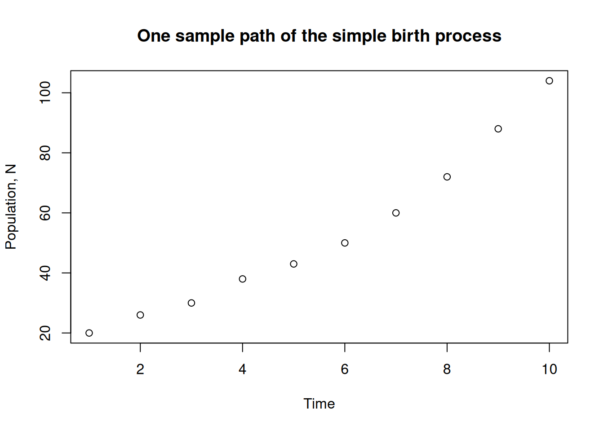
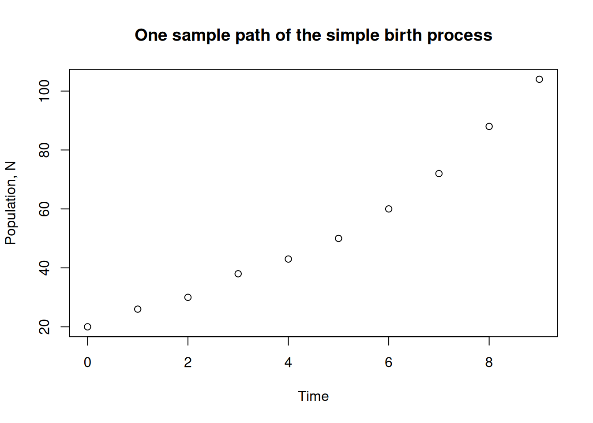
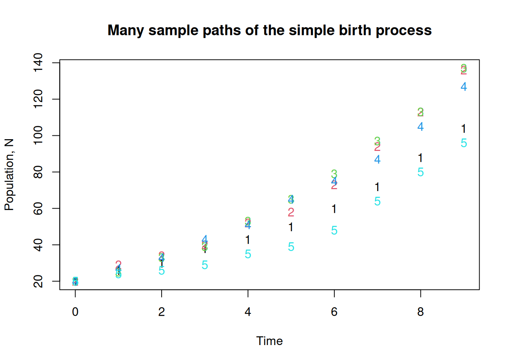
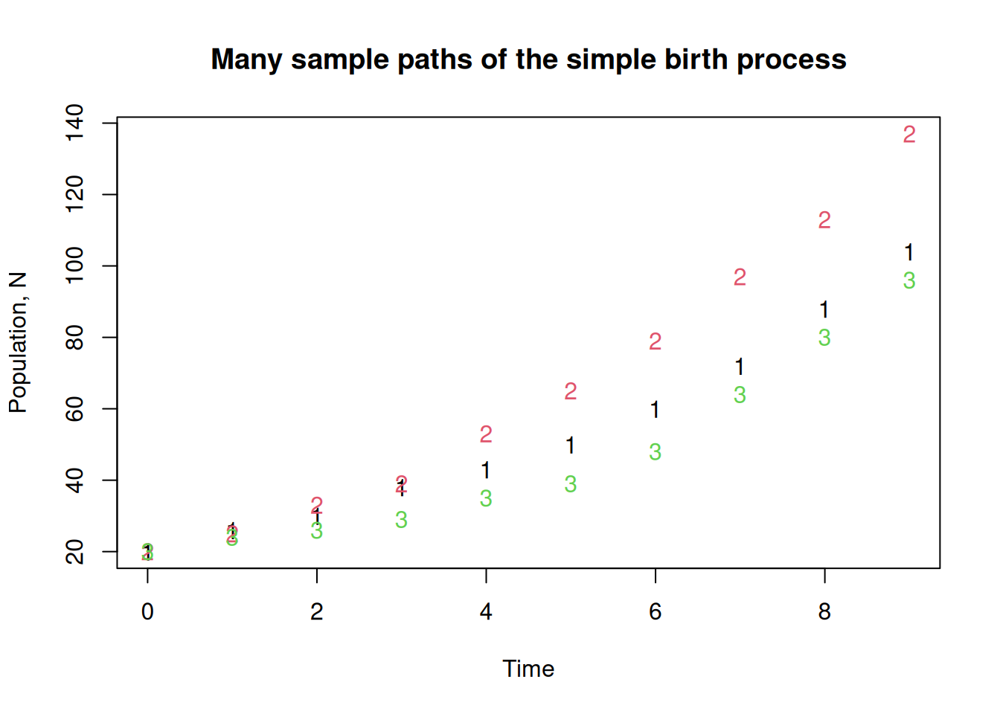
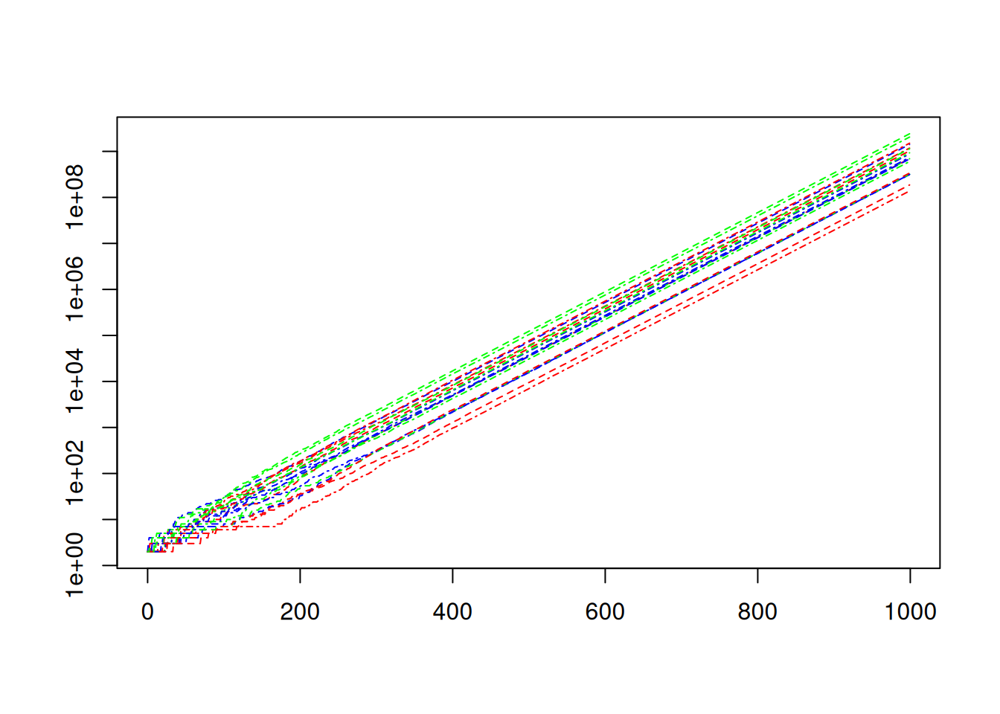
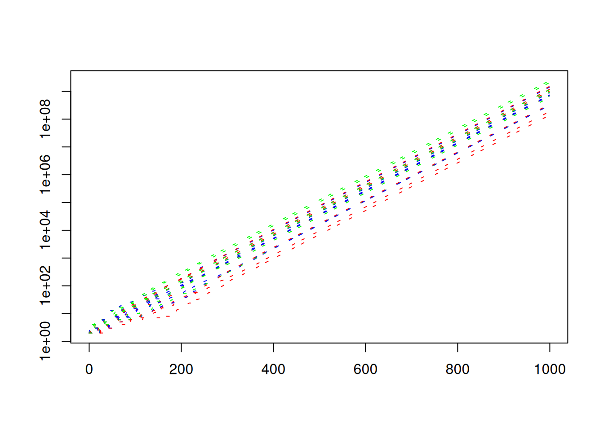

Show the code
T = 10
No = 20
N = rep(0,length=T)We will use R for demonstrations in class, but you are free to use python, matlab or julia if you wish.
?command at the prompt. For example ?rbinom will give you a summary of the command for generating a string of random numbers from a binomial distribution. (See https://www.r-project.org/help.html for more details.)To start, we will use R to generate some sample paths from a simple stochastic process. Let \(N(t)\) be the number of individuals in the population at time \(t\), \(t\in\{0,1,\dots\}\), and suppose in any given time step, any given individual will give birth with probability \(b\). We will need a vector to store our resulting populations, and we should specify the length of this vector in advance. We also need some initial population, say \(N(0) = N_0\). First, set up a vector to hold the results.
T = 10
No = 20
N = rep(0,length=T)rep stands for replicate. The result is a vector of zeros of length \(T\).
Next, initialize the first entry of \(N\) with initial value for the simulation.
N[1] = NoWe next want to generate some births. Since we’ve assumed all individuals are reproducing independently, we model the number of births in the first time interval by a binomial distribution with parameters \(N\) and \(b\). We assign a value to \(b\) and then use R’s rbinom command.
b = .2
births = rbinom(1,N[1],b)To repeat this for the rest of the times, we set up a loop.
for (t in 1:(T-1)) {
N[t+1] = N[t] + rbinom(1,N[t],b)
}R is built to work with vectors. It is just as easy, and surprisingly, almost as quick to generate many many sample paths as it is to generate one. To store the results, we set up a matrix with \(S\) columns, where \(S\) is the number of sample paths. The resulting code is as follows.
T = 10
S = 5
N = matrix(0,nrow = T, ncol = S)
N[1,] = 20
b = .2
for (t in 1:(T-1)) {
N[t+1,] = N[t,] + rbinom(S,N[t,],b)
}The third line sets up a matrix with T rows, and S columns and fills it with zeros.
The fourth line initializes the first row of the matrix with initial values for the simulations. Note the slight difference from matlab’s notation.
Notice the first argument to rbinom is the number of times we sample the binomial distribution.
If you type N again, you will see that the numbers increase as you move down the columns of the matrix. Each column represents on sample path of our simulation.
head(N) [,1] [,2] [,3] [,4] [,5]
[1,] 20 20 20 20 20
[2,] 26 29 25 27 24
[3,] 30 34 33 33 26
[4,] 38 40 39 43 29
[5,] 43 52 53 51 35
[6,] 50 58 65 65 39This is all very nice, but for larger simulations, it just won’t do to look at the matrix of numbers. We need some plots. Here are a few useful ones to start with
plot the first column against the row number plot(N[,1])
add some axis labels and a nice title
plot(N[,1],
xlab="Time",ylab="Population, N",
main="One sample path of the simple birth process"
)
plot(N[,1],ann=FALSE)
title(xlab="Time",
ylab="Population, N",
main="One sample path of the simple birth process")
Notice that we needed to pass `ann=FALSE` to the plot command to suppress the default axis labelstimes that contains the times corresponding to each index and pass that to the plot routine. In this case this is just a shift down by 1.times = 1:T - 1
plot(times,N[,1],ann=FALSE)
title(xlab="Time",
ylab="Population, N",
main="One sample path of the simple birth process")
matplot(times,N,ann=FALSE)
title(xlab="Time",
ylab="Population, N",
main="Many sample paths of the simple birth process")
matplot(times,N[,c(1,3,5)],ann=FALSE)
title(xlab="Time",
ylab="Population, N",
main="Many sample paths of the simple birth process")
These values for the initial population and the probability of a birth in unit time are both too high for longer simulations. Change them to something more reasonable, and rerun the code with larger S and T, say 20 and 1000.
But wait, we don’t want to be typing everything in again every time we change parameters. That’s just crazy. What we do is wrap the whole thing up as a function and put it in a script. Save the following as a file, call it birthprocess.R, or whatever you like.
birthprocess = function(b = 0.01, No = 2, T = 200, S = 10) {
N = matrix(0.0,nrow = T, ncol = S)
N[1,] = No
for (t in 1:(T-1)) {
N[t+1,] = N[t,] + rbinom(S,N[t,],b)
}
return(N)
}Notice that we have assigned default values to the arguments of the function. This isn’t necessary, but it can be useful.
To source our script from a prompt, enter source("birthprocess.R")
You may need to explore your filesystem to learn where you saved the file to. Use the command getwd() to find out what your working directory is.
To call our function and assign the results to the matrix N we enter the following at the prompt
N = birthprocess(b=0.02,No=2,T=1000,S=20)By default, a function in R returns the value of the last evaluated expression. This seems to mean the use of the return statement is a matter of preference.
If we want to put more than two or three sample paths on a single plot, then we need a way to shrink the point size. There are a few ways to do this. The simplest for our purposes is to set the pch option to something else, like a dot instead of a circle.
times = 0:(dim(N)[1]-1)
matplot(times,N, pch=".",ann=FALSE)
title(xlab="Time",
ylab="Population, N",
main="Many sample paths of the simple birth process")To change to a log scale, use the log option which you can set to either log="x" or log="y":
matplot(times,N[,], pch=".", log = "y",ann=FALSE)
If you don’t have lots and lots of points, the dots might not show up. you can try o or * or some other symbol. Try each of these variations and see if you can deduce the meaning of the options
matplot(times,N, col=1, lty = "dashed", type="l",log = "y")matplot(times,N,ann=FALSE,
col=c("red","green","blue"),
lty = c("dashed","dotdash"),
type="l",
log = "y")
matplot(times,N,ann=FALSE,
col=c("red","green","blue"),
lty = "393C3F",
type="l",
log = "y")
There are several ways to add things to plots.
You can try the lines or curves functions. For example:
lines(times,No*exp(b*times))adds an exponential curve to the plot.
curve(No*exp(b*x),add=TRUE)Does the same thing.
You can make the line thicker.
lines(times,No*exp(b*times),lwd=2)Or you can make it a red, double-dashed line.
lines(times,No*exp(b*times),lwd=2,lty="twodash",col='red')Note that the variants matpoints and matlines will also add points and lines to existing plots. These are probably equivalent to adding add=TRUE to matplot.
The ggplot2 library provides a fancier plotting interface. To use the package, we need to mangle our data into a long format. You could use the tidyr package, but for now, lets play a bit with data frames and rep.
Assuming we have our data in the matrix N whose columns are separate simulations, we rearrange it into a long format as follows.
T = dim(N)[1]
S = dim(N)[2]
df = data.frame(
time = rep(1:T, times=S),
run = as.factor(rep(1:S,each=T)),
population = as.vector(N)
)The times and each arguments to rep indicate the number of times to replicate the vectors 1:T and 1:S. One instance repeats the entire vector S times and the other repeats each element T times. as.factor essentially adds some information to the vector run so that ggplot will treat the entries as factors. We’ll see why when we play with the plots. as.vector simply treats the data in the matrix N as if it were a vector. R stores matrices in column-order, so this effectively stacks the columns into one long vector of length TxS.
Use str(df) to see the structure of the data frame df
str(df)'data.frame': 20000 obs. of 3 variables:
$ time : int 1 2 3 4 5 6 7 8 9 10 ...
$ run : Factor w/ 20 levels "1","2","3","4",..: 1 1 1 1 1 1 1 1 1 1 ...
$ population: num 2 2 2 2 2 3 3 3 3 3 ...If this is your fist use of ggplot you may need to install the package. Use Rstudio’s graphical interface, or try install.packages("ggplot2") if you aren’t using a fancy interface.
First we’ll source the package. Then create a simple plot.
library(ggplot2)
ggplot(df,aes(x=time,y=population)) +
geom_line(aes(col=run)) +
scale_y_continuous(trans="log10")ggplot builds the plot up in layers. The ggplot call inputs the data and sets up the aesthetics. I.e., which columns are used. The call to goem_line instructs ggplot to colour the curves according to the factor run. ggplot is powerful, but with power comes complication.